Image filtering is a fundamental image processing tool. I implemented my_filter() which behaves like MATLAB built-in function imfilter(). The filter algorithm:
function output = my_imfilter(image, filter)
% This function is intended to behave like the built in function imfilter().
% The function works for filters of any width and height combination.
filter_size = size(filter);
image_size = size(image);
% The filter can't be centered on pixels
% at the image boundary without parts of the filter being out of bounds.
% Handling this issue by mirroring the image content over the boundaries.
top_border = floor(filter_size(1)/2);
side_border = floor(filter_size(2)/2);
resized = padarray(image, [top_border, side_border], 'symmetric');
% Extract the output image and the resized(padded) input image
% into the individual red, green, and blue color channels.
% Note the output image is initialized as the input image.
filtered_red = image(:, :, 1);
filtered_green = image(:, :, 2);
filtered_blue = image(:, :, 3);
resized_red = resized(:, :, 1);
resized_green = resized(:, :, 2);
resized_blue = resized(:, :, 3);
% Iterate through the output image
% and replace each pixel with the weighted sum of its neighbors.
for m = 1 : image_size(1)
for n = 1 : image_size(2)
sum_red = 0;
sum_green = 0;
sum_blue = 0;
% Calculate the convolution of the filter
% and resized input image by piecewise multiplication.
for p = 1 : filter_size(1)
for q = 1 : filter_size(2)
sum_red = sum_red + filter(p,q) * resized_red(m + p - 1, n + q - 1);
sum_green = sum_green + filter(p,q) * resized_green(m + p - 1, n + q - 1);
sum_blue = sum_blue + filter(p,q) * resized_blue(m + p - 1, n + q - 1);
end
end
% Apply the result to each color channels of the output image
filtered_red(m, n) = sum_red;
filtered_green(m, n) = sum_green;
filtered_blue(m, n) = sum_blue;
end
end
% Combine separate color channels into one RGB output image.
output = cat(3, filtered_red, filtered_green, filtered_blue);
end
Example of a hybrid image.
A hybrid image is a picture that combines the low-spatial frequency of one picture with the high spatial frequencies of another picture resulting in an image that looks different with the change of viewing distance. In the following picture, the person may appear to be Einstein, but if you steps back a few meters, it may look like Marilyn.
The low frequency image is obtained by filtering one image with a low-pass filter, the high frequency image is obtained by filtering one image with high-pass filter. The final result is generated by adding these two filtered images.
%% Setup
% read images and convert to floating point format
image1 = im2single(imread('../data/motorcycle.bmp'));
image2 = im2single(imread('../data/bicycle.bmp'));
% The hybrid images will differ depending on which image you
% assign as image1 (which will provide the low frequencies) and which image
% you asign as image2 (which will provide the high frequencies)
%% Filtering and Hybrid Image construction
cutoff_frequency = 4; % This will be tuned for every image pair to get the best results.
filter = fspecial('Gaussian', cutoff_frequency*4+1, cutoff_frequency);
%%%%%%%%%%%%%%%%%%%%%%%%%%%%%%%%%%%%%%%%%%%%%%%%%%%%%%%%%%%%%%%%%%%
% Use my_imfilter to create 'low_frequencies' and
% 'high_frequencies' and then combine them to create 'hybrid_image'
%%%%%%%%%%%%%%%%%%%%%%%%%%%%%%%%%%%%%%%%%%%%%%%%%%%%%%%%%%%%%%%%%%%
%%%%%%%%%%%%%%%%%%%%%%%%%%%%%%%%%%%%%%%%%%%%%%%%%%%%%%%%%%%%%%%%%%%%%%%%
% Remove the high frequencies from image1 by blurring it. The amount of
% blur that works best will vary with different image pairs
%%%%%%%%%%%%%%%%%%%%%%%%%%%%%%%%%%%%%%%%%%%%%%%%%%%%%%%%%%%%%%%%%%%%%%%%
low_frequencies = my_imfilter(image1, filter);
%%%%%%%%%%%%%%%%%%%%%%%%%%%%%%%%%%%%%%%%%%%%%%%%%%%%%%%%%%%%%%%%%%%%%%%%
% Remove the low frequencies from image2. The easiest way to do this is to
% subtract a blurred version of image2 from the original version of image2.
% This will give you an image centered at zero with negative values.
%%%%%%%%%%%%%%%%%%%%%%%%%%%%%%%%%%%%%%%%%%%%%%%%%%%%%%%%%%%%%%%%%%%%%%%%
high_frequencies = image2 - my_imfilter(image2, filter);
%%%%%%%%%%%%%%%%%%%%%%%%%%%%%%%%%%%%%%%%%%%%%%%%%%%%%%%%%%%%%%%%%%%%%%%%
% Combine the high frequencies and low frequencies
%%%%%%%%%%%%%%%%%%%%%%%%%%%%%%%%%%%%%%%%%%%%%%%%%%%%%%%%%%%%%%%%%%%%%%%%
hybrid_image = low_frequencies + high_frequencies;
%% Visualize and save outputs
figure(1); imshow(low_frequencies)
figure(2); imshow(high_frequencies + 0.5);
vis = vis_hybrid_image(hybrid_image);
figure(3); imshow(vis);
imwrite(low_frequencies, 'low_frequencies.jpg', 'quality', 95);
imwrite(high_frequencies + 0.5, 'high_frequencies.jpg', 'quality', 95);
imwrite(hybrid_image, 'hybrid_image.jpg', 'quality', 95);
imwrite(vis, 'hybrid_image_scales.jpg', 'quality', 95);
For the first two images of scales, the clear edges of high-frequency image are emphasized, then, for the last two images of scales, the influences of high-frequency image are reduced, and the appearance of low-frequency images become stronger. For example, in the motorcyle and bicycle image shown below, color and contrast at high frequencies is used to enhance the bicycle up-close. From a distance, one sees a motorcycle. The shape of the motorcycle is interpreted as shadows up-close.
It is important to choose a good cutoff frequency for the filter. I first defined the original cutoff frequency as the standard deviation, in pixels, of the Gaussian blur and then manually tuned the cutoff frequency for every image pair to get the best results. Generally, if it is hard to see the low-frequency image from far away, I will decrease the original cutoff frequency. Lower cutoff frequency results in removing more high frequency from the hybrid image, so that the low-frequency images become apparent from a shorter viewing distance. If it is hard to distinguish the high-frequency image from the shadow, I will increase the original cutoff frequency to strengthen the high-frequency image.
|
high frequency + low frequency ==> hybrid image (scales) |
|
cutoff frequency: 5 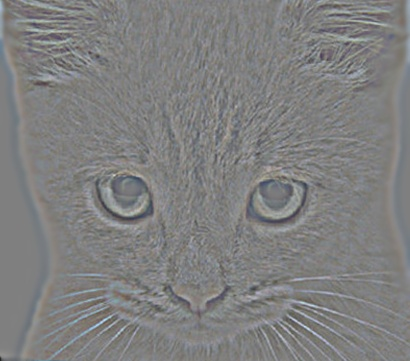 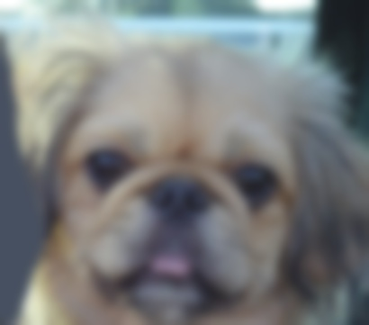 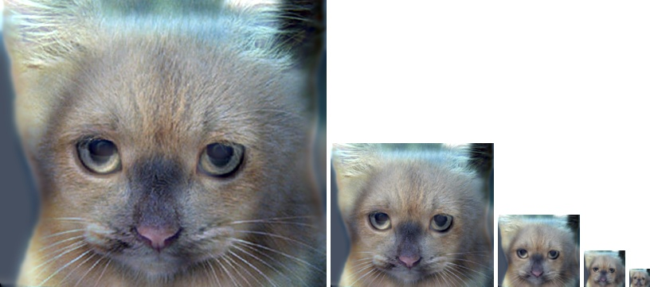 |
|
cutoff frequency: 3 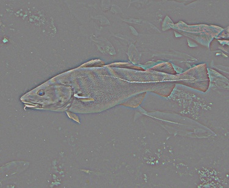 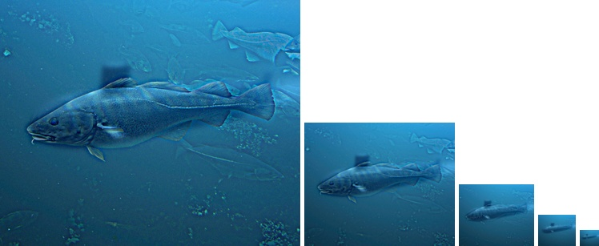 |
|
cutoff frequency: 3 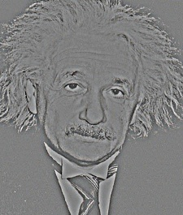 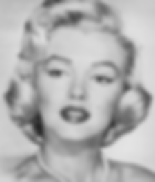 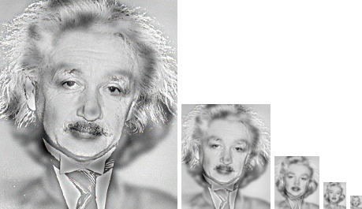 |
|
cutoff frequency: 4 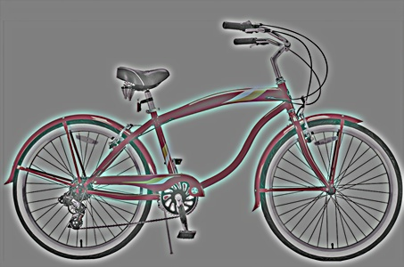 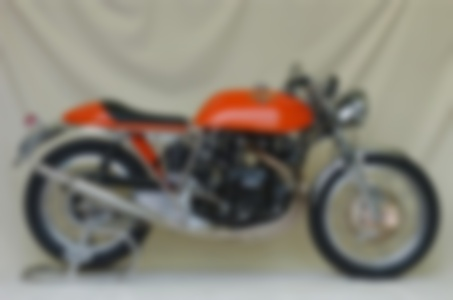 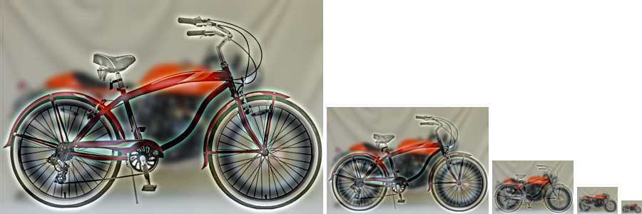 |
|
cutoff frequency: 4 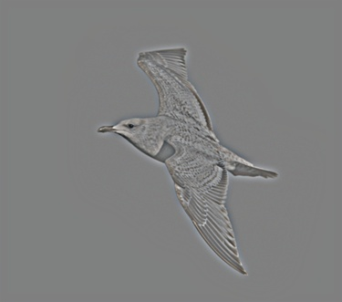 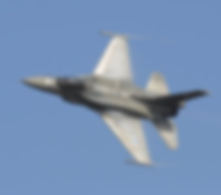 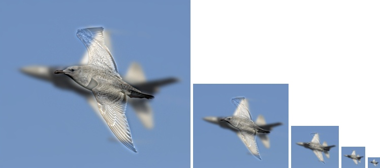 |
I created an additional example of Trump vs Clinton. The images are perfectly aligned, and there is a clear transition from Clinton to Trump when changing the viewing distance. Have fun! :)
|
cutoff frequency: 5 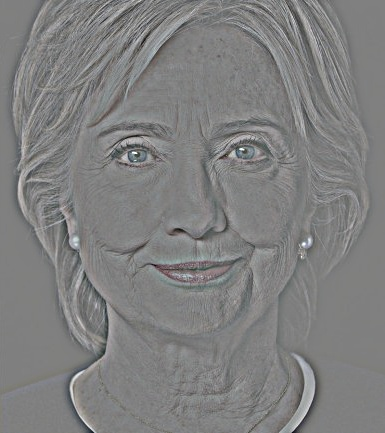 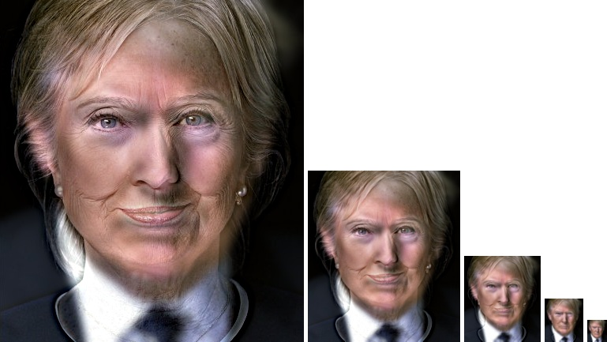 |
A. Oliva, A. Torralba, P.G. Schyns (2006). Hybrid Images. ACM Transactions on Graphics, ACM Siggraph, 25-3, 527-530.